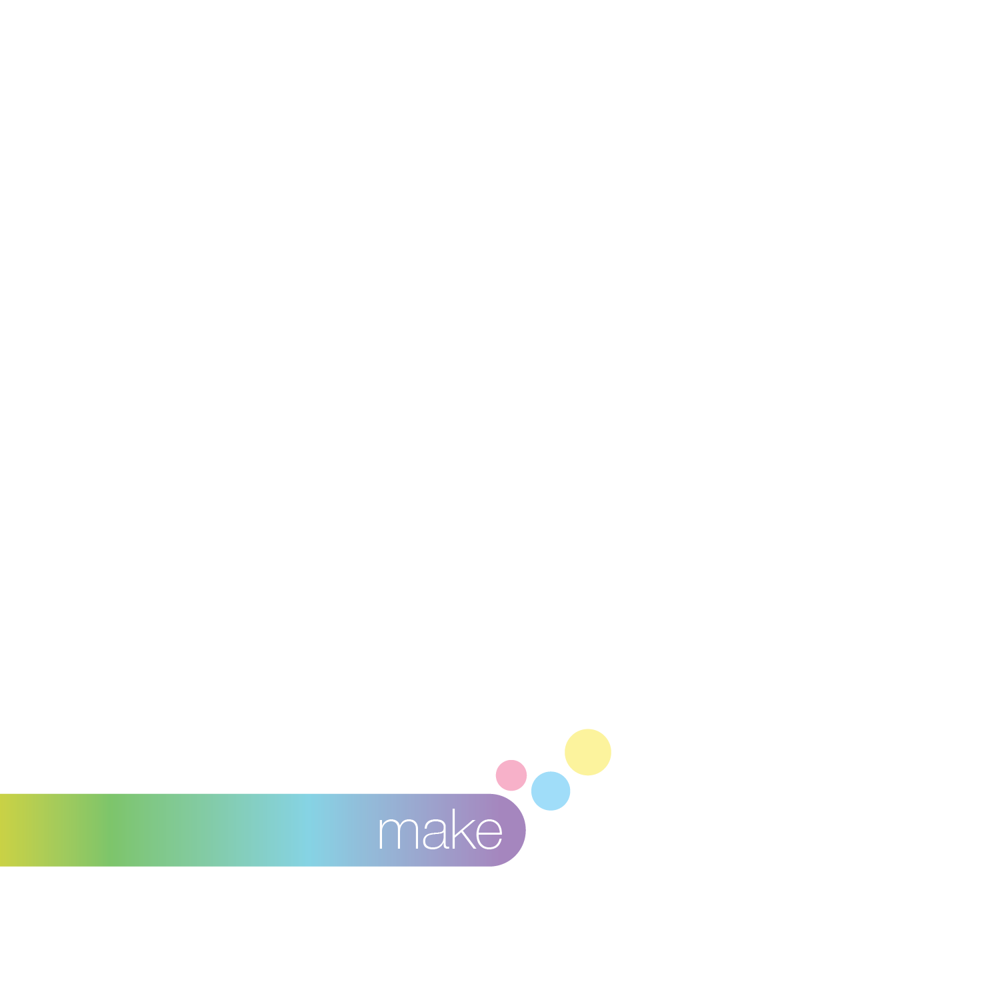
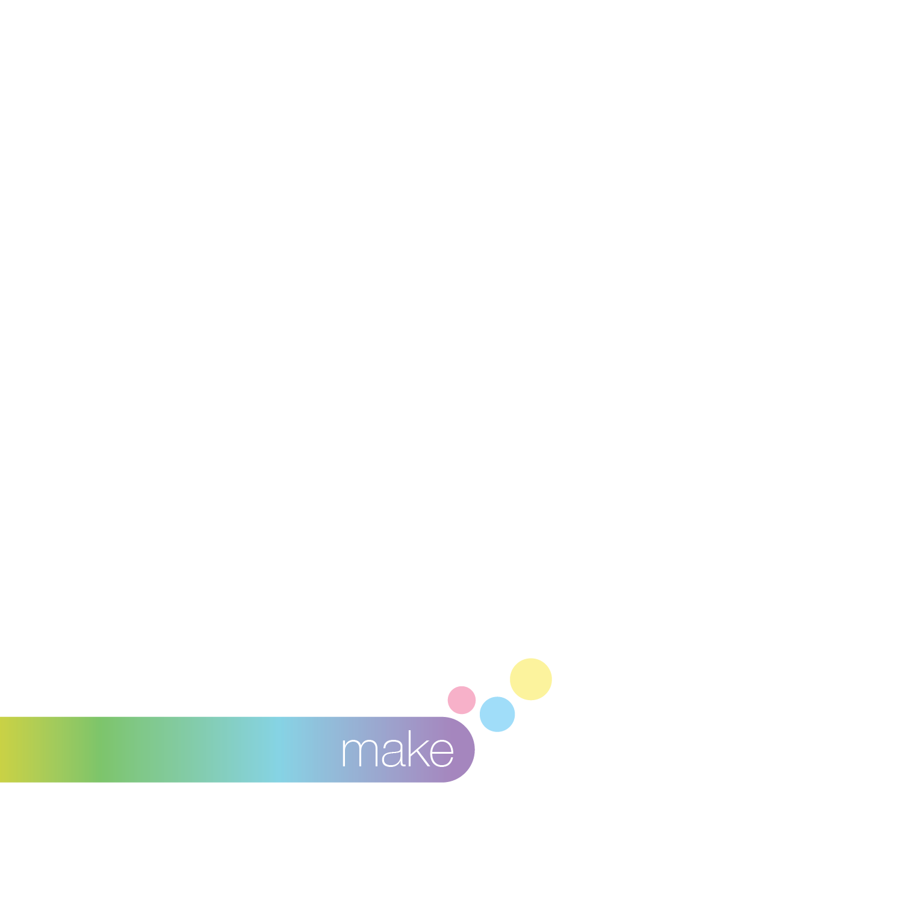

This was a several step project which ultimately ended in a book for a made up company of our choosing. I chose to make it about a fictional music streaming service, focusing on mixing your own taste of songs with others to find new music based on each persons own unique taste. To begin, we were to make 3 black and white compositions which represented different aspects of the company: in this case, I focused on music, connection, and an organic feel.
initial concepts
From here, we were to flesh out our ideas with a poster that would represent the visual identity carried out within the book. I wanted to represent the flow of music and inspiration from one person to another, as well as retaining the theme of connection and individuality. To represent people within my work, I made this bubble sheet to represent people's unique tastes that made up each individual.
initial concepts


 
